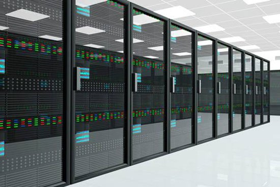
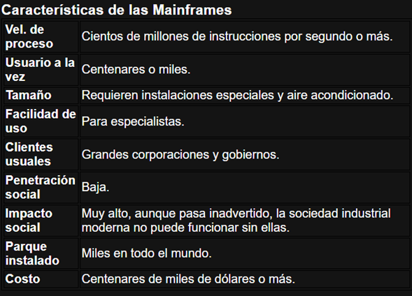

Sistemas de Computadoras centrales y dedicadas
Que es?...
Concepto?...

¿Qué es una computadora central?
Una computadora central (en inglés mainframe) es una computadora grande, potente y costosa usada principalmente por una gran compañía para el procesamiento de una gran cantidad de datos; por ejemplo, para el procesamiento de transacciones bancarias.
La función de una PC central se define tanto por la rapidez de su CPU como por su enorme memoria interna, su alta y enorme capacidad de almacenamiento externo, sus resultados en los dispositivos E/S rápidos y considerables, la alta calidad de su ingeniería interna que tiene como resultado una alta confiabilidad y soporte técnico caro sin embargo de alta calidad.

Aplicación
A diferencia de las Supercomputadoras, ofrecen un entorno de trabajo versátil y simplificado, grandes velocidades de procesamiento a un muy bajo costo con respecto a las antes mencionadas. Tienen muchas más aplicaciones que las Supercomputadoras ya que son más asequibles al mercado corporativo, siendo la solución para grandes supermercados y empresas. Algunas de las aplicaciones son:
Administración y soporte para grandes redes, así como servidor de aplicaciones web y bases de datos dinámicas y de acceso remoto.
Investigaciones científicas de nivel bajo y medio, y en algunos casos aislados de nivel superior, como por ejemplo en el desarrollo de simulaciones interactivas sobre el comportamiento de una sustancia X ante la presencia de una Sustancia Y, desarrollando nuevos fármacos y sustancias químicas.
En las estaciones meteorológicas, permitiendo el desarrollo de animaciones sobre el clima y las posibles consecuencias ante determinadas situaciones.
En la ingeniería civil, en la construcción de planos y modelos de construcción más eficientes, como edificios capaces de soportar ciclones, tornados y sismos, así como un mejor aprovechamiento del entorno, como es el espacio, la luz, la climatización natural, etc.
¿Qué es una computadora dedicada?
Bueno, de forma resumida, se trata de una computadora con sistema de computación centralizado o software que ofrece servicios a una red de computadoras, conocida como cliente.
Se trata de un modelo que puede ser tanto para sistemas (como Business Intelligence o ERP como para sitios en que la empresa asegura un servidor totalmente exclusivo en el data center.
¿Cómo funciona un servidor dedicado?
En la práctica, un servidor dedicado funciona como si fuera el data center de la propia empresa, pues, posibilita configurar el servicio de la forma que deseas, de acuerdo con las necesidades específicas.
Como el propio nombre deja claro, este tipo de servidor es dedicado a la organización contratante, lo que significa que el espacio no es dividido con otras empresas, garantizando así, un desempeño mucho mejor.
Servidor Dedicado x No Dedicado -> Diferencias
¿Cuáles son las diferencias entre el servidor dedicado y el no dedicado?
El servidor dedicado tiene muchos más recursos de almacenamiento y de procesamiento de datos. Como su propio nombre dice, disponibiliza el servicio con total exclusividad para el cliente.
De esta manera, garantiza mejor desempeño y performance para las aplicaciones y sitios web, generando más estabilidad, velocidad, seguridad, entre otros.
Es una excelente alternativa para los sitios web que tienen varios accesos y aplicaciones que consumen muchos recursos.
Ventajas
-
Performance: El servidor dedicado favorece la performance de aplicaciones y de sitios web. Como se trata de una solución totalmente exclusiva, el tráfico tiende a ser bien menor cuando comparado al ambiente compartido, por ejemplo. Esto, sin dudas, contribuye para la navegación, aparte de reducir el tiempo de carga.
-
Flexibilidad: Con esta solución, se tiene total control del ambiente de hosting y total libertad para instalar scripts, módulos y plugins. Esto no sucede con los hostings compartidos, una vez que no permiten tanta flexibilidad para los usuarios. El servidor dedicado contribuye también para la escalabilidad de proyectos que tienen un crecimiento muy rápido o picos de accesos.
-
Autonomía: Otro beneficio ofrecido por este servidor es la autonomía proporcionada para el equipo de Tecnología de Información (TI) o para el desarrollador, sea para el control de accesos, o para la gestión del banco de datos. Con él, es posible tener acceso a la línea de comando como root.
-
Estabilidad: La estabilidad es otro factor relevante del servidor dedicado, que tiende a ser superior por ser exclusivo. Los servidores dedicados acostumbran a ubicarse en data centers de primera línea, contando con los mejores recursos de redes y de hardware. Por eso, la infraestructura garantiza más condiciones de desempeño y de estabilidad para los clientes.
-
Seguridad: La preocupación con la seguridad es menor para quien elige un servidor dedicado, especialmente, por el hecho de que los accesos limitados pueden ser personalizados de acuerdo con la necesidad. Esto sin contar que, en él, es posible bloquear IPs, entre otras medidas de seguridad.